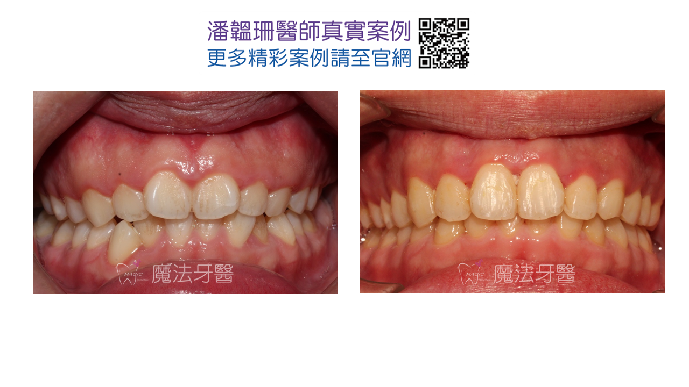

真實案例分享



在現代牙科治療中，越來越多成人選擇透過矯正改善牙齒排列、提升咬合功能與美觀。不過，許多患者在完成矯正療程後，發現牙齒間出現一個個小小的「三角黑縫」，這就是常見的「黑三角」現象（Black Triangle）。
究竟這些三角縫是什麼？為什麼會出現？又該怎麼改善呢？本文將帶您深入了解。
所謂的「三角縫」，是指兩顆牙齒之間下方靠近牙齦處出現的空隙，呈現三角形狀，肉眼看起來像是黑色的小縫隙。這些空隙其實是因為牙齦未能填滿兩齒間的間隙所造成，可能影響美觀，也容易讓食物殘渣卡住，增加牙周病風險。
牙齦退縮或高度不足：成年人的牙齦與牙周組織再生能力較低，矯正後牙齒雖然排整齊，原本擁擠區域的牙齦卻無法自然填補空隙。
牙齒形狀為三角錐狀：若牙齒本身為「三角形」而非「方形」，兩牙間接觸面小，也容易導致牙齦無法填滿縫隙。
矯正後牙齒位置改變：調整牙齒位置可能會拉開牙齒間的接觸點，增加黑三角發生的機會。
保持良好口腔衛生，避免牙齦發炎惡化。
使用牙線與牙間刷，清潔牙縫並刺激牙齦回復。
牙齒接觸點修型（IPR）：醫師可透過微調牙齒接觸點形狀，讓牙齦有機會自然生長並填補縫隙。
晶透全瓷牙冠（FPC）：透過量身打造的牙冠改善牙齒外型與間距，不僅填補縫隙，也讓整體牙齒更白皙美觀。
陶瓷美白貼片（Veneers）：對於不需修整整顆牙齒者，可採用美白貼片遮蓋黑三角，快速達成美觀效果。